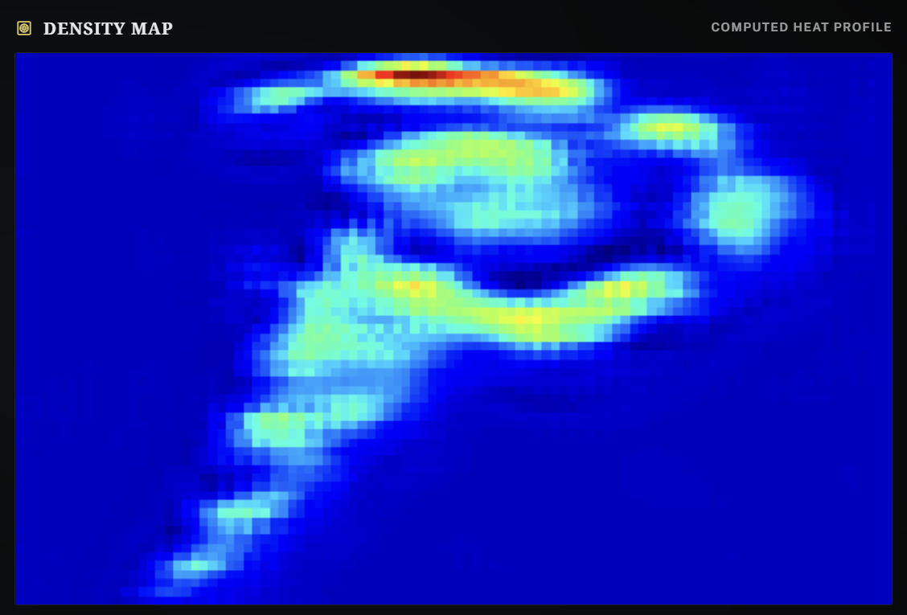
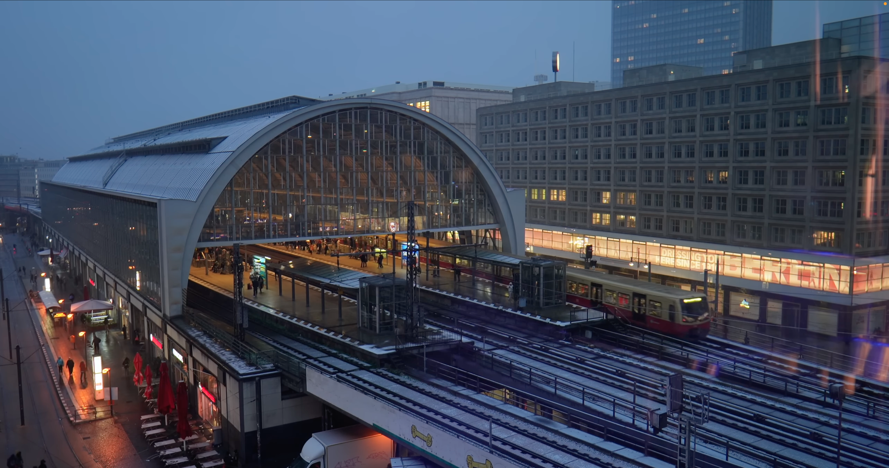
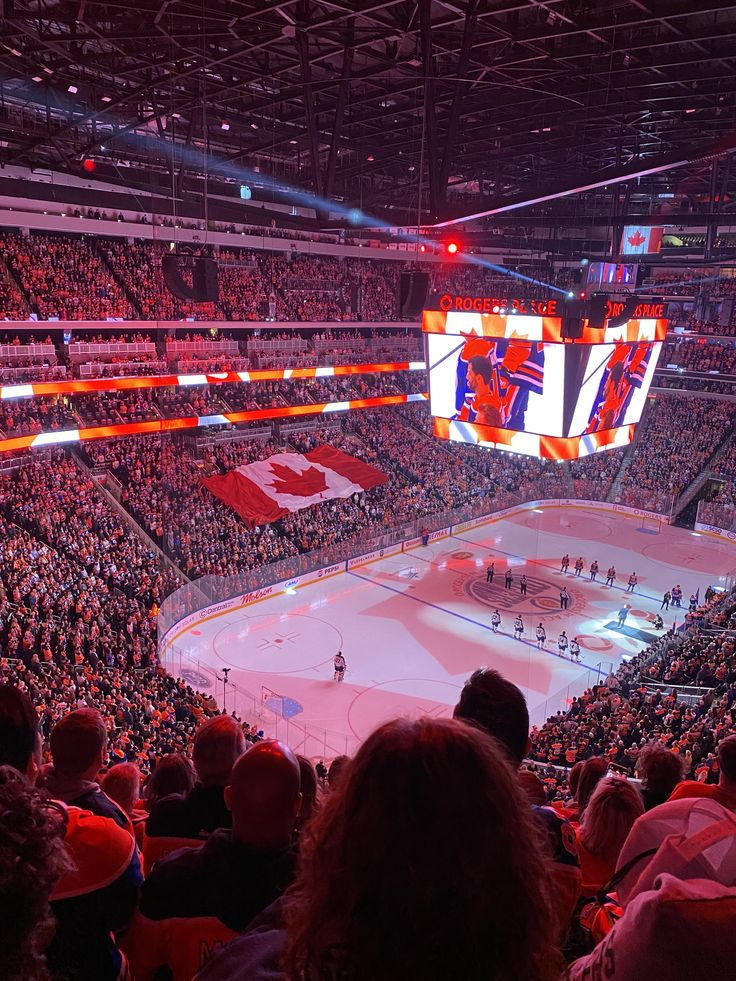
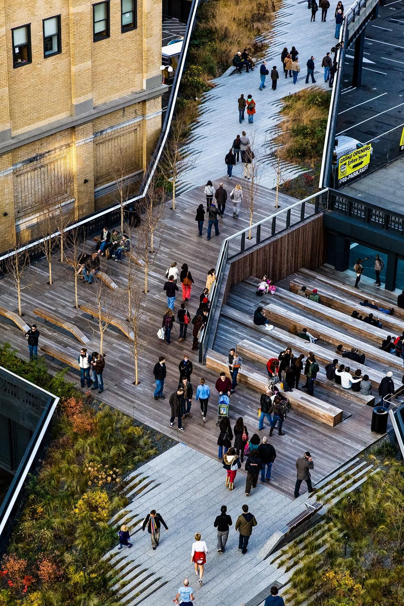

CrowdVision
See Everything. Protect Everyone. Transform passive observation into proactive intelligence.
Preventing incidents before they occur.
Real-time crowd intelligence for the people who keep venues safe. CrowdVision analyzes live camera feeds to deliver live density heatmaps and instant capacity warnings — built for stadiums, transit hubs, and public events.
24/7
Autonomous Monitoring
Plug & Play
Any Existing Camera
Instant
Capacity Alerts

Behind every safe event is a team that could see what was coming
Environments
Engineered for Complexity.

Transit Hubs
Optimize commuter flow and prevent platform overcrowding with real-time bottleneck detection.

Sports Arenas
Ensure fan safety during high-stakes exits and manage concession line distribution efficiently.

Public Squares
Monitor urban density patterns for city planning and emergency response preparedness.